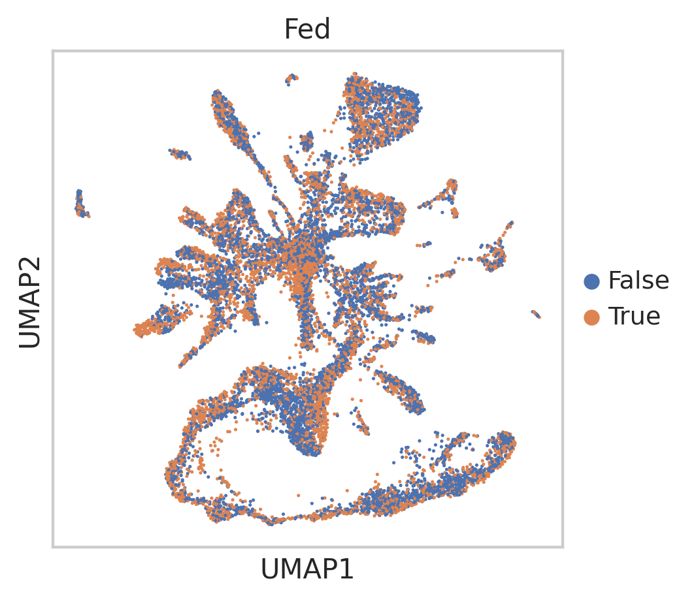

import requests
from tqdm import tnrange, tqdm_notebook
def download_file(doi,ext):
url = 'https://api.datacite.org/dois/'+doi+'/media'
r = requests.get(url).json()
netcdf_url = r['data'][0]['attributes']['url']
r = requests.get(netcdf_url,stream=True)
#Set file name
fname = doi.split('/')[-1]+ext
#Download file with progress bar
if r.status_code == 403:
print("File Unavailable")
if 'content-length' not in r.headers:
print("Did not get file")
else:
with open(fname, 'wb') as f:
total_length = int(r.headers.get('content-length'))
pbar = tnrange(int(total_length/1024), unit="B")
for chunk in r.iter_content(chunk_size=1024):
if chunk:
pbar.update()
f.write(chunk)
return fname
1
2
#Starvation h5ad data, all nonzero genes included, filtered for 'real cells' from de-multiplexing
download_file('10.22002/D1.1797','.gz')
import pandas as pd
import anndata
import scanpy as sc
import numpy as np
import scipy.sparse
import warnings
warnings.filterwarnings('ignore')
from sklearn.neighbors import (KNeighborsClassifier,NeighborhoodComponentsAnalysis)
from sklearn.pipeline import Pipeline
from sklearn.manifold import TSNE
from sklearn.decomposition import PCA
from sklearn.preprocessing import scale
import random
import matplotlib.pyplot as plt
import matplotlib.colors as mcolors
%matplotlib inline
sc.set_figure_params(dpi=125)
import seaborn as sns
sns.set(style="whitegrid")
%load_ext rpy2.ipython
1
2
# # See version of all installed packages, last done 01/11/2021
# !pip list -v > pkg_vers_20210111.txt
1
2
3
4
5
6
7
8
9
10
11
12
13
14
15
16
17
18
#Read in annotations
from io import StringIO
hg_ortho_df = pd.read_csv(StringIO(''.join(l.replace('|', '\t') for l in open('D1.1819'))),
sep="\t",header=None,skiprows=[0,1,2,3])
hg_ortho_df[['XLOC','TCONS']] = hg_ortho_df[13].str.split(expand=True)
hg_ortho_df[['Gene','gi']] = hg_ortho_df[3].str.split(expand=True)
hg_ortho_df['Description']= hg_ortho_df[11]
panther_df = pd.read_csv('D1.1820',
sep="\t",header=None) #skiprows=[0,1,2,3]
goTerm_df = pd.read_csv('D1.1822',
sep=" ",header=None) #skiprows=[0,1,2,3]
How Gene Filtering & Clustering Was Done for Kallisto Processed Data¶
1
2
3
4
5
6
7
8
9
10
11
#Read in starvation data
#Kallisto bus h5ad file with no gene filtering
bus_fs_raw = anndata.read("D1.1797")
print(bus_fs_raw )
#CellRanger h5ad file with old louvain clustering
cellRanger_fs = anndata.read("D1.1798")
print(cellRanger_fs)
#Code here for neighbor score
#Calculate number of neighbors (out of top 15) with same starvation condition
#Input adata object and if score is for fed or starved (True or False)
def neighborScores(adata,conditionBool):
sc.pp.neighbors(adata,n_neighbors=15)
neighborDists = adata.uns['neighbors']['distances'].todense()
counts = []
for i in range(0,len(adata.obs_names)):
cellNames = adata.obs_names
#get fed observation for this cell
cellObs = adata.obs['fed'][cellNames[i]]
#get row for cell
nonZero = neighborDists[i,:]>0
l = nonZero.tolist()[0]
cellRow = neighborDists[i,:]
cellRow = cellRow[:,l]
#get 'fed' observations
obs = adata.obs['fed'][l]
# count # in 'fed' observations == cell obs
count = 0
#if cellObs == conditionBool:
for j in obs:
if j == conditionBool:
count += 1
counts += [count]
print(len(counts))
return counts
Use PAGA embedding of cells to visualize umi counts, cell types, and animal conditions/labels
1
2
3
4
5
#Exact values used to generate PAGA image below
# sc.pp.neighbors(bus_fs_clus,n_neighbors=150, n_pcs=60,random_state=42) #use_rep='X_nca'
# sc.tl.paga(bus_fs_clus, groups='cellRanger_louvain',)
sc.pl.paga(bus_fs_clus, color=['cellRanger_louvain'])
#Change colormap range
rgb_list = [tuple([67/256,114/256,196/256]),tuple([237/256,125/256,49/256])]
float_list = list(np.linspace(0,1,len(rgb_list)))
cdict = dict()
for num, col in enumerate(['red','green','blue']):
col_list = [[float_list[i],rgb_list[i][num],rgb_list[i][num]] for i in range(len(float_list))]
cdict[col] = col_list
cmp = mcolors.LinearSegmentedColormap('starv',segmentdata=cdict,N=256)
#Update 36 Louvain cluster colors with main class colors
for n in annos_names:
pos = annos_dict[n]
for p in pos:
#
pos_2 = np.where(annos_names == n)[0][0]
colorsCellR[p] = colors[pos_2]
#colorsCellR
colorsCopy = colorsCellR.copy()
#Append color information to adata
bus_fs_clus.obs['new_cellRanger_louvain'] = bus_fs_clus.obs['cellRanger_louvain']
bus_fs_clus.uns['new_cellRanger_louvain_colors'] = colorsCellR
#Convert labels to string format for plotting - and update order of colors
#Make dictionary with cellRanger_louvain 36 clusters and new names --> new_cellRanger_louvain
bus_fs_clus.obs['new_cellRanger_louvain'] = [str(i) for i in bus_fs_clus.obs['new_cellRanger_louvain']]
bus_fs_clus.obs['new_cellRanger_louvain'] = pd.Categorical(bus_fs_clus.obs['new_cellRanger_louvain'])
new_cats = bus_fs_clus.obs['new_cellRanger_louvain'].cat.categories
new_colors = bus_fs_clus.uns['new_cellRanger_louvain_colors']
for i in range(0,len(new_cats)):
new_colors[i] = colorsCopy[int(new_cats[i])]
bus_fs_clus.uns['new_cellRanger_louvain_colors'] = new_colors
#Create dendrogram for subclusters
sc.tl.dendrogram(bus_fs_clus,'new_cellRanger_louvain',linkage_method='ward')
bus_fs_clus.uns["dendrogram_new_cellRanger_louvain"] = bus_fs_clus.uns["dendrogram_['new_cellRanger_louvain']"]
#Make plot for 8 broad classes of cell types
colors = bus_fs_clus.uns['annos_colors']
colors
fig, ax = plt.subplots(figsize=(10,10))
c = np.unique(bus_fs_clus.obs["annos"].values)
cmap = [i+'70' for i in colors]#plt.cm.get_cmap("tab20")
names = c
for idx, (cluster, name) in enumerate(zip(c, names)):
XX = bus_fs_clus[bus_fs_clus.obs.annos == cluster,:].obsm["X_umap"]
x = XX[:,0]
y = XX[:,1]
ax.scatter(x, y, color = cmap[idx], label=cluster,s=5)
if name == 'Bioluminescent Cells':
ax.annotate(name,
(np.median(x)+7, np.median(y)),
horizontalalignment='center',
verticalalignment='bottom',
size=14, weight='bold',
color="black",
backgroundcolor=cmap[idx])
else:
ax.annotate(name,
(np.median(x), np.median(y)),
horizontalalignment='center',
verticalalignment='bottom',
size=14, weight='bold',
color="black",
backgroundcolor=cmap[idx])
ax.set_xlabel('UMAP1')
ax.set_ylabel('UMAP2')
ax.grid(False)
ax.get_xaxis().set_ticks([])
ax.get_yaxis().set_ticks([])
for edge_i in ['bottom','left']:
ax.spines[edge_i].set_edgecolor("black")
for edge_i in ['top', 'right']:
ax.spines[edge_i].set_edgecolor("white")
plt.savefig('broadAtlas.pdf')
plt.show()
colors = bus_fs_clus.uns['annosSub_colors']
colors
fig, ax = plt.subplots(figsize=(10,10))
c = np.unique(bus_fs_clus.obs["cellRanger_louvain"].values)
cmap = [i+'70' for i in colors]
names = c
for idx, (cluster, name) in enumerate(zip(c, names)):
XX = bus_fs_clus[bus_fs_clus.obs.cellRanger_louvain.isin([cluster]),:].obsm["X_umap"]
text = list(bus_fs_clus[bus_fs_clus.obs.cellRanger_louvain.isin([cluster]),:].obs.annosSub)[0]
x = XX[:,0]
y = XX[:,1]
ax.scatter(x, y, color = cmap[idx], label=str(cluster)+': '+text,s=5)
ax.annotate(name,
(np.mean(x), np.mean(y)),
horizontalalignment='center',
verticalalignment='bottom',
size=20, weight='bold',
color="black",
backgroundcolor=cmap[idx])
ax.legend(loc='center left',bbox_to_anchor=(1, 0.5),prop={'size': 10},frameon=False)
ax.set_axis_off()
#plt.savefig('36ClusAtlas.pdf')
plt.show()
1
2
# This is the saved output used in the notebook
bus_fs_clus.write('fedStarved_withUMAPPaga.h5ad')
How marker genes are selected and annotated for the 36 cell types¶
1
2
3
4
#Get top n marker genes for each cluster
#Keep top 100 genes, 'louvain_neur' is label for neuron clusters determined using Louvain clustering algorithm
sc.tl.rank_genes_groups(bus_fs_clus, 'cellRanger_louvain',n_genes = 100,method='wilcoxon') #Using non-parametric test for significance
#List of top markers for Figure 2, from subset of top5markers
topMarkers = pd.read_csv('D1.1809',sep=",")
topMarkers.head()
clus
markerGene
annot
orthoGene
orthoDescr
pantherID
pantherDescr
source
0
0
XLOC_010813
DDX39A/B
DDX39B
spliceosome RNA helicase DDX39B [Homo sapiens]
['PTHR24031:SF521']
['SPLICEOSOME RNA HELICASE DDX39B']
1
0
XLOC_008430
PA2G4
PA2G4
proliferation-associated protein 2G4 [Homo sa...
['PTHR10804:SF125']
['PROLIFERATION-ASSOCIATED 2G4 ,B']
2
1
XLOC_016073
ZP-containing-1
NaN
NaN
['PTHR11576']
['ZONA PELLUCIDA SPERM-BINDING PROTEIN 3']
3
2
XLOC_006164
FMN-reductiase
NaN
NaN
['PTHR30543:SF12']
['NAD(P)H-DEPENDENT FMN REDUCTASE LOT6']
4
3
XLOC_013735
Innexin-like
NaN
NaN
['PTHR11893:SF41']
['INNEXIN INX7']
1
topMarkers = topMarkers[0:51]
1
2
3
4
5
6
7
8
9
10
11
12
13
14
15
16
17
topGenes = []
names = []
var_groups = []
var_labels = []
ind = 0
#Add cell type labels for gene markers
for i in np.unique(topMarkers.clus):
sub = topMarkers[topMarkers.clus == i]
topGenes += list(sub.markerGene)
names += list(sub.annot)
var_groups += [(ind,ind+len(list(sub.annot))-1)]
var_labels += [str(int(i))]
ind += len(list(sub.annot))
1
2
3
4
5
6
7
8
9
10
11
12
13
#Add to raw data so any genes can be plotted
#Kallisto bus h5ad file with no gene filtering
bus_fs_raw = anndata.read("D1.1797")
print(bus_fs_raw )
sc.pp.filter_cells(bus_fs_raw, min_counts=0) #1
sc.pp.filter_genes(bus_fs_raw, min_counts=0)
bus_fs_raw.obs['new_cellRanger_louvain'] = bus_fs_clus.obs['new_cellRanger_louvain']
bus_fs_raw.uns["dendrogram_new_cellRanger_louvain"] = bus_fs_clus.uns["dendrogram_new_cellRanger_louvain"]
bus_fs_raw.uns['new_cellRanger_louvain_colors'] = bus_fs_clus.uns['new_cellRanger_louvain_colors']
bus_fs_raw.obs['fed'] = pd.Categorical(bus_fs_clus.obs['fed'])
bus_fs_raw.obs['cellRanger_louvain'] = pd.Categorical(bus_fs_clus.obs['cellRanger_louvain'])
#Subsample for clusters > 100 in size
#Subsample from full dataset, across each cluster
def subSample(adata):
groups = np.unique(adata.obs['cellRanger_louvain'])
subSample = 100
cellNames = np.array(adata.obs_names)
allCells = []
for i in groups:
cells = np.array(list(adata.obs['cellRanger_louvain'].isin([i])))
cellLocs = list(np.where(cells)[0])
if len(cellLocs) > 100:
#Take all cells if < subSample
choice = random.sample(cellLocs,subSample)
else:
choice = cellLocs
pos = list(choice)
#print(len(pos))
allCells += list(cellNames[pos])
sub = adata[allCells,:]
return sub
# Add which gene modules the pertubed genes are in
clusters = []
for g in deGenesDF.Genes:
if g in list(de_gene_adata.obs_names):
clus = de_gene_adata[g,:].obs['louvain'][0]
clusters += [clus]
else:
clusters += ['padjClus_not_sig']
deGenesDF['geneClus'] = clusters
deGenesDF.head()
%%Rlibrary(topGO)library(readr)#Read in DE genes (XLOC's) with GO TermsgeneID2GO<-readMappings(file="atlas_deseq2_genes_fortopGO.txt")str(head(geneID2GO))#Add gene modules as factor atlas_deseq2_genes_fortopGO_metadata<-read_delim("atlas_deseq2_genes_fortopGO_metadata.txt","\t",escape_double=FALSE,col_names=FALSE,trim_ws=TRUE)#Set variablesallMods=unique(atlas_deseq2_genes_fortopGO_metadata$X3)alpha=0.05/length(allMods)#Bonferroni correction, could correct for all pairwise comparisons?getEnrichTerms<-function(geneID2GO,modMetadata,clus){mods<-factor(as.integer(modMetadata$X3==clus))#Choose gene module to make 'interesting'names(mods)<-names(geneID2GO)#Get genes only in module of interestclusGenes<-function(mods){return(mods==1)}subMods<-clusGenes(mods)#Make GO dataGOdata<-new("topGOdata",ontology="BP",allGenes=mods,geneSel=subMods,annot=annFUN.gene2GO,gene2GO=geneID2GO)#GOdata#sigGenes(GOdata)resultFis<-runTest(GOdata,algorithm="classic",statistic="fisher")resultWeight<-runTest(GOdata,statistic="fisher")#P-values from Weight AlgorithmpvalsWeight<-score(resultWeight)#hist(pvalsWeight, 50, xlab = "p-values")allRes<-GenTable(GOdata,classic=resultFis,weight=resultWeight,orderBy="weight",ranksOf="classic",topNodes=20)subRes<-allRes[as.numeric(allRes$weight)<alpha,]#Write outputwrite.csv(subRes,file=paste('mod',clus,'_GOTerms.csv',sep=""))}#Run for all modules and write outputsfor(cinallMods){getEnrichTerms(geneID2GO=geneID2GO,modMetadata=atlas_deseq2_genes_fortopGO_metadata,clus=c)}
Listof6$XLOC_007052:chr[1:5]"GO:0019538""GO:0044238""GO:0006461""GO:0006457"...$XLOC_045583:chr[1:17]"GO:0005488""GO:0006139""GO:0007166""GO:0044238"...$XLOC_004670:chr[1:12]"GO:0016070""GO:0006139""GO:0044238""GO:0019219"...$XLOC_025064:chr[1:3]"GO:0003824""GO:0008152""GO:0016491"$XLOC_045734:chr[1:16]"GO:0016070""GO:0016787""GO:0016072""GO:0044238"...$XLOC_042552:chr[1:31]"GO:0019220""GO:0005085""GO:0006807""GO:0007165"...R[write to console]:──Columnspecification────────────────────────────────────────────────────────cols(X1=col_character(),X2=col_character(),X3=col_double())R[write to console]:BuildingmostspecificGOs.....R[write to console]:(176GOtermsfound.)R[write to console]:BuildGODAGtopology..........R[write to console]:(442GOtermsand780relations.)R[write to console]:Annotatingnodes...............R[write to console]:(440genesannotatedtotheGOterms.)R[write to console]:--ClassicAlgorithm--thealgorithmisscoring193nontrivialnodesparameters:teststatistic:fisherR[write to console]:--Weight01Algorithm--thealgorithmisscoring193nontrivialnodesparameters:teststatistic:fisherR[write to console]:Level12:4nodestobescored(0eliminatedgenes)R[write to console]:Level11:5nodestobescored(0eliminatedgenes)R[write to console]:Level10:5nodestobescored(38eliminatedgenes)R[write to console]:Level9:11nodestobescored(42eliminatedgenes)R[write to console]:Level8:15nodestobescored(63eliminatedgenes)R[write to console]:Level7:17nodestobescored(123eliminatedgenes)R[write to console]:Level6:31nodestobescored(174eliminatedgenes)R[write to console]:Level5:41nodestobescored(228eliminatedgenes)R[write to console]:Level4:31nodestobescored(278eliminatedgenes)R[write to console]:Level3:24nodestobescored(340eliminatedgenes)R[write to console]:Level2:8nodestobescored(374eliminatedgenes)R[write to console]:Level1:1nodestobescored(408eliminatedgenes)R[write to console]:BuildingmostspecificGOs.....R[write to console]:(176GOtermsfound.)R[write to console]:BuildGODAGtopology..........R[write to console]:(442GOtermsand780relations.)R[write to console]:Annotatingnodes...............R[write to console]:(440genesannotatedtotheGOterms.)R[write to console]:--ClassicAlgorithm--thealgorithmisscoring221nontrivialnodesparameters:teststatistic:fisherR[write to console]:--Weight01Algorithm--thealgorithmisscoring221nontrivialnodesparameters:teststatistic:fisherR[write to console]:Level13:1nodestobescored(0eliminatedgenes)R[write to console]:Level12:3nodestobescored(0eliminatedgenes)R[write to console]:Level11:4nodestobescored(4eliminatedgenes)R[write to console]:Level10:5nodestobescored(29eliminatedgenes)R[write to console]:Level9:11nodestobescored(37eliminatedgenes)R[write to console]:Level8:18nodestobescored(50eliminatedgenes)R[write to console]:Level7:22nodestobescored(105eliminatedgenes)R[write to console]:Level6:28nodestobescored(149eliminatedgenes)R[write to console]:Level5:48nodestobescored(222eliminatedgenes)R[write to console]:Level4:40nodestobescored(286eliminatedgenes)R[write to console]:Level3:30nodestobescored(360eliminatedgenes)R[write to console]:Level2:10nodestobescored(385eliminatedgenes)R[write to console]:Level1:1nodestobescored(409eliminatedgenes)R[write to console]:BuildingmostspecificGOs.....R[write to console]:(176GOtermsfound.)R[write to console]:BuildGODAGtopology..........R[write to console]:(442GOtermsand780relations.)R[write to console]:Annotatingnodes...............R[write to console]:(440genesannotatedtotheGOterms.)R[write to console]:--ClassicAlgorithm--thealgorithmisscoring208nontrivialnodesparameters:teststatistic:fisherR[write to console]:--Weight01Algorithm--thealgorithmisscoring208nontrivialnodesparameters:teststatistic:fisherR[write to console]:Level13:1nodestobescored(0eliminatedgenes)R[write to console]:Level12:3nodestobescored(0eliminatedgenes)R[write to console]:Level11:5nodestobescored(4eliminatedgenes)R[write to console]:Level10:7nodestobescored(38eliminatedgenes)R[write to console]:Level9:15nodestobescored(45eliminatedgenes)R[write to console]:Level8:19nodestobescored(67eliminatedgenes)R[write to console]:Level7:15nodestobescored(124eliminatedgenes)R[write to console]:Level6:30nodestobescored(176eliminatedgenes)R[write to console]:Level5:45nodestobescored(223eliminatedgenes)R[write to console]:Level4:32nodestobescored(284eliminatedgenes)R[write to console]:Level3:26nodestobescored(347eliminatedgenes)R[write to console]:Level2:9nodestobescored(383eliminatedgenes)R[write to console]:Level1:1nodestobescored(407eliminatedgenes)R[write to console]:BuildingmostspecificGOs.....R[write to console]:(176GOtermsfound.)R[write to console]:BuildGODAGtopology..........R[write to console]:(442GOtermsand780relations.)R[write to console]:Annotatingnodes...............R[write to console]:(440genesannotatedtotheGOterms.)R[write to console]:--ClassicAlgorithm--thealgorithmisscoring165nontrivialnodesparameters:teststatistic:fisherR[write to console]:--Weight01Algorithm--thealgorithmisscoring165nontrivialnodesparameters:teststatistic:fisherR[write to console]:Level13:1nodestobescored(0eliminatedgenes)R[write to console]:Level12:3nodestobescored(0eliminatedgenes)R[write to console]:Level11:4nodestobescored(4eliminatedgenes)R[write to console]:Level10:5nodestobescored(29eliminatedgenes)R[write to console]:Level9:10nodestobescored(35eliminatedgenes)R[write to console]:Level8:12nodestobescored(52eliminatedgenes)R[write to console]:Level7:12nodestobescored(107eliminatedgenes)R[write to console]:Level6:23nodestobescored(158eliminatedgenes)R[write to console]:Level5:38nodestobescored(205eliminatedgenes)R[write to console]:Level4:27nodestobescored(264eliminatedgenes)R[write to console]:Level3:22nodestobescored(341eliminatedgenes)R[write to console]:Level2:7nodestobescored(379eliminatedgenes)R[write to console]:Level1:1nodestobescored(402eliminatedgenes)R[write to console]:BuildingmostspecificGOs.....R[write to console]:(176GOtermsfound.)R[write to console]:BuildGODAGtopology..........R[write to console]:(442GOtermsand780relations.)R[write to console]:Annotatingnodes...............R[write to console]:(440genesannotatedtotheGOterms.)R[write to console]:--ClassicAlgorithm--thealgorithmisscoring165nontrivialnodesparameters:teststatistic:fisherR[write to console]:--Weight01Algorithm--thealgorithmisscoring165nontrivialnodesparameters:teststatistic:fisherR[write to console]:Level12:2nodestobescored(0eliminatedgenes)R[write to console]:Level11:3nodestobescored(0eliminatedgenes)R[write to console]:Level10:3nodestobescored(23eliminatedgenes)R[write to console]:Level9:6nodestobescored(31eliminatedgenes)R[write to console]:Level8:8nodestobescored(46eliminatedgenes)R[write to console]:Level7:13nodestobescored(101eliminatedgenes)R[write to console]:Level6:27nodestobescored(151eliminatedgenes)R[write to console]:Level5:37nodestobescored(199eliminatedgenes)R[write to console]:Level4:27nodestobescored(263eliminatedgenes)R[write to console]:Level3:28nodestobescored(337eliminatedgenes)R[write to console]:Level2:10nodestobescored(379eliminatedgenes)R[write to console]:Level1:1nodestobescored(411eliminatedgenes)R[write to console]:BuildingmostspecificGOs.....R[write to console]:(176GOtermsfound.)R[write to console]:BuildGODAGtopology..........R[write to console]:(442GOtermsand780relations.)R[write to console]:Annotatingnodes...............R[write to console]:(440genesannotatedtotheGOterms.)R[write to console]:--ClassicAlgorithm--thealgorithmisscoring191nontrivialnodesparameters:teststatistic:fisherR[write to console]:--Weight01Algorithm--thealgorithmisscoring191nontrivialnodesparameters:teststatistic:fisherR[write to console]:Level12:1nodestobescored(0eliminatedgenes)R[write to console]:Level11:2nodestobescored(0eliminatedgenes)R[write to console]:Level10:4nodestobescored(23eliminatedgenes)R[write to console]:Level9:6nodestobescored(31eliminatedgenes)R[write to console]:Level8:10nodestobescored(49eliminatedgenes)R[write to console]:Level7:17nodestobescored(92eliminatedgenes)R[write to console]:Level6:25nodestobescored(124eliminatedgenes)R[write to console]:Level5:48nodestobescored(198eliminatedgenes)R[write to console]:Level4:37nodestobescored(265eliminatedgenes)R[write to console]:Level3:30nodestobescored(355eliminatedgenes)R[write to console]:Level2:10nodestobescored(385eliminatedgenes)R[write to console]:Level1:1nodestobescored(410eliminatedgenes)R[write to console]:BuildingmostspecificGOs.....R[write to console]:(176GOtermsfound.)R[write to console]:BuildGODAGtopology..........R[write to console]:(442GOtermsand780relations.)R[write to console]:Annotatingnodes...............R[write to console]:(440genesannotatedtotheGOterms.)R[write to console]:--ClassicAlgorithm--thealgorithmisscoring183nontrivialnodesparameters:teststatistic:fisherR[write to console]:--Weight01Algorithm--thealgorithmisscoring183nontrivialnodesparameters:teststatistic:fisherR[write to console]:Level12:1nodestobescored(0eliminatedgenes)R[write to console]:Level11:1nodestobescored(0eliminatedgenes)R[write to console]:Level10:1nodestobescored(13eliminatedgenes)R[write to console]:Level9:4nodestobescored(13eliminatedgenes)R[write to console]:Level8:10nodestobescored(13eliminatedgenes)R[write to console]:Level7:15nodestobescored(71eliminatedgenes)R[write to console]:Level6:31nodestobescored(126eliminatedgenes)R[write to console]:Level5:45nodestobescored(207eliminatedgenes)R[write to console]:Level4:35nodestobescored(289eliminatedgenes)R[write to console]:Level3:29nodestobescored(348eliminatedgenes)R[write to console]:Level2:10nodestobescored(383eliminatedgenes)R[write to console]:Level1:1nodestobescored(410eliminatedgenes)R[write to console]:BuildingmostspecificGOs.....R[write to console]:(176GOtermsfound.)R[write to console]:BuildGODAGtopology..........R[write to console]:(442GOtermsand780relations.)R[write to console]:Annotatingnodes...............R[write to console]:(440genesannotatedtotheGOterms.)R[write to console]:--ClassicAlgorithm--thealgorithmisscoring180nontrivialnodesparameters:teststatistic:fisherR[write to console]:--Weight01Algorithm--thealgorithmisscoring180nontrivialnodesparameters:teststatistic:fisherR[write to console]:Level12:1nodestobescored(0eliminatedgenes)R[write to console]:Level11:2nodestobescored(0eliminatedgenes)R[write to console]:Level10:4nodestobescored(23eliminatedgenes)R[write to console]:Level9:7nodestobescored(31eliminatedgenes)R[write to console]:Level8:11nodestobescored(47eliminatedgenes)R[write to console]:Level7:17nodestobescored(102eliminatedgenes)R[write to console]:Level6:26nodestobescored(137eliminatedgenes)R[write to console]:Level5:44nodestobescored(222eliminatedgenes)R[write to console]:Level4:33nodestobescored(274eliminatedgenes)R[write to console]:Level3:25nodestobescored(361eliminatedgenes)R[write to console]:Level2:9nodestobescored(383eliminatedgenes)R[write to console]:Level1:1nodestobescored(410eliminatedgenes)R[write to console]:BuildingmostspecificGOs.....R[write to console]:(176GOtermsfound.)R[write to console]:BuildGODAGtopology..........R[write to console]:(442GOtermsand780relations.)R[write to console]:Annotatingnodes...............R[write to console]:(440genesannotatedtotheGOterms.)R[write to console]:--ClassicAlgorithm--thealgorithmisscoring76nontrivialnodesparameters:teststatistic:fisherR[write to console]:--Weight01Algorithm--thealgorithmisscoring76nontrivialnodesparameters:teststatistic:fisherR[write to console]:Level9:1nodestobescored(0eliminatedgenes)R[write to console]:Level8:2nodestobescored(0eliminatedgenes)R[write to console]:Level7:4nodestobescored(54eliminatedgenes)R[write to console]:Level6:7nodestobescored(85eliminatedgenes)R[write to console]:Level5:20nodestobescored(90eliminatedgenes)R[write to console]:Level4:17nodestobescored(175eliminatedgenes)R[write to console]:Level3:16nodestobescored(316eliminatedgenes)R[write to console]:Level2:8nodestobescored(349eliminatedgenes)R[write to console]:Level1:1nodestobescored(391eliminatedgenes)R[write to console]:BuildingmostspecificGOs.....R[write to console]:(176GOtermsfound.)R[write to console]:BuildGODAGtopology..........R[write to console]:(442GOtermsand780relations.)R[write to console]:Annotatingnodes...............R[write to console]:(440genesannotatedtotheGOterms.)R[write to console]:--ClassicAlgorithm--thealgorithmisscoring101nontrivialnodesparameters:teststatistic:fisherR[write to console]:--Weight01Algorithm--thealgorithmisscoring101nontrivialnodesparameters:teststatistic:fisherR[write to console]:Level9:2nodestobescored(0eliminatedgenes)R[write to console]:Level8:6nodestobescored(0eliminatedgenes)R[write to console]:Level7:10nodestobescored(55eliminatedgenes)R[write to console]:Level6:14nodestobescored(67eliminatedgenes)R[write to console]:Level5:23nodestobescored(126eliminatedgenes)R[write to console]:Level4:19nodestobescored(229eliminatedgenes)R[write to console]:Level3:18nodestobescored(291eliminatedgenes)R[write to console]:Level2:8nodestobescored(367eliminatedgenes)R[write to console]:Level1:1nodestobescored(393eliminatedgenes)R[write to console]:BuildingmostspecificGOs.....R[write to console]:(176GOtermsfound.)R[write to console]:BuildGODAGtopology..........R[write to console]:(442GOtermsand780relations.)R[write to console]:Annotatingnodes...............R[write to console]:(440genesannotatedtotheGOterms.)R[write to console]:--ClassicAlgorithm--thealgorithmisscoring152nontrivialnodesparameters:teststatistic:fisherR[write to console]:--Weight01Algorithm--thealgorithmisscoring152nontrivialnodesparameters:teststatistic:fisherR[write to console]:Level12:1nodestobescored(0eliminatedgenes)R[write to console]:Level11:2nodestobescored(0eliminatedgenes)R[write to console]:Level10:3nodestobescored(23eliminatedgenes)R[write to console]:Level9:4nodestobescored(31eliminatedgenes)R[write to console]:Level8:7nodestobescored(41eliminatedgenes)R[write to console]:Level7:11nodestobescored(91eliminatedgenes)R[write to console]:Level6:26nodestobescored(108eliminatedgenes)R[write to console]:Level5:37nodestobescored(176eliminatedgenes)R[write to console]:Level4:27nodestobescored(252eliminatedgenes)R[write to console]:Level3:23nodestobescored(324eliminatedgenes)R[write to console]:Level2:10nodestobescored(361eliminatedgenes)R[write to console]:Level1:1nodestobescored(401eliminatedgenes)R[write to console]:BuildingmostspecificGOs.....R[write to console]:(176GOtermsfound.)R[write to console]:BuildGODAGtopology..........R[write to console]:(442GOtermsand780relations.)R[write to console]:Annotatingnodes...............R[write to console]:(440genesannotatedtotheGOterms.)R[write to console]:--ClassicAlgorithm--thealgorithmisscoring139nontrivialnodesparameters:teststatistic:fisherR[write to console]:--Weight01Algorithm--thealgorithmisscoring139nontrivialnodesparameters:teststatistic:fisherR[write to console]:Level10:1nodestobescored(0eliminatedgenes)R[write to console]:Level9:4nodestobescored(0eliminatedgenes)R[write to console]:Level8:8nodestobescored(7eliminatedgenes)R[write to console]:Level7:13nodestobescored(69eliminatedgenes)R[write to console]:Level6:21nodestobescored(121eliminatedgenes)R[write to console]:Level5:29nodestobescored(213eliminatedgenes)R[write to console]:Level4:28nodestobescored(286eliminatedgenes)R[write to console]:Level3:26nodestobescored(349eliminatedgenes)R[write to console]:Level2:8nodestobescored(381eliminatedgenes)R[write to console]:Level1:1nodestobescored(408eliminatedgenes)R[write to console]:BuildingmostspecificGOs.....R[write to console]:(176GOtermsfound.)R[write to console]:BuildGODAGtopology..........R[write to console]:(442GOtermsand780relations.)R[write to console]:Annotatingnodes...............R[write to console]:(440genesannotatedtotheGOterms.)R[write to console]:--ClassicAlgorithm--thealgorithmisscoring157nontrivialnodesparameters:teststatistic:fisherR[write to console]:--Weight01Algorithm--thealgorithmisscoring157nontrivialnodesparameters:teststatistic:fisherR[write to console]:Level12:1nodestobescored(0eliminatedgenes)R[write to console]:Level11:2nodestobescored(0eliminatedgenes)R[write to console]:Level10:2nodestobescored(23eliminatedgenes)R[write to console]:Level9:3nodestobescored(31eliminatedgenes)R[write to console]:Level8:5nodestobescored(39eliminatedgenes)R[write to console]:Level7:12nodestobescored(90eliminatedgenes)R[write to console]:Level6:24nodestobescored(126eliminatedgenes)R[write to console]:Level5:40nodestobescored(168eliminatedgenes)R[write to console]:Level4:32nodestobescored(249eliminatedgenes)R[write to console]:Level3:26nodestobescored(340eliminatedgenes)R[write to console]:Level2:9nodestobescored(380eliminatedgenes)R[write to console]:Level1:1nodestobescored(403eliminatedgenes)R[write to console]:BuildingmostspecificGOs.....R[write to console]:(176GOtermsfound.)R[write to console]:BuildGODAGtopology..........R[write to console]:(442GOtermsand780relations.)R[write to console]:Annotatingnodes...............R[write to console]:(440genesannotatedtotheGOterms.)R[write to console]:--ClassicAlgorithm--thealgorithmisscoring227nontrivialnodesparameters:teststatistic:fisherR[write to console]:--Weight01Algorithm--thealgorithmisscoring227nontrivialnodesparameters:teststatistic:fisherR[write to console]:Level12:3nodestobescored(0eliminatedgenes)R[write to console]:Level11:4nodestobescored(0eliminatedgenes)R[write to console]:Level10:6nodestobescored(36eliminatedgenes)R[write to console]:Level9:11nodestobescored(40eliminatedgenes)R[write to console]:Level8:21nodestobescored(59eliminatedgenes)R[write to console]:Level7:21nodestobescored(106eliminatedgenes)R[write to console]:Level6:36nodestobescored(161eliminatedgenes)R[write to console]:Level5:51nodestobescored(203eliminatedgenes)R[write to console]:Level4:34nodestobescored(267eliminatedgenes)R[write to console]:Level3:28nodestobescored(338eliminatedgenes)R[write to console]:Level2:11nodestobescored(384eliminatedgenes)R[write to console]:Level1:1nodestobescored(410eliminatedgenes)
We analyze clustered perturbed genes with GO term analysis output by looking at the sharing of gene modules between cell types and differential expression of these genes under starvation
1
2
3
4
5
6
deGenesDF = pd.read_csv('D1.1810')
deGenesDF.head()
#Read in saved de_gene_adata here
de_gene_adata = anndata.read('D1.1813')
de_gene_adata
#Mark genes with no GO Terms
def returnVal(i):
if i == i:
i= i.replace("[","")
i = i.replace("]","")
i= i.replace("'","")
i = i.replace("'","")
return i
else:
return 'nan'
def returnGO(i,names):
if i in names:
return "withGO"
else:
return "n/a"
deGenesDF.goTerms = [returnVal(i) for i in list(deGenesDF.goTerms)]
deGenesDF_sub = deGenesDF[deGenesDF.geneClus != 'padjClus_not_sig']
deGenesDF_sub = deGenesDF_sub[deGenesDF_sub.goTerms != 'nan'] # Has GO Term
withGO_names = list(deGenesDF_sub.Genes)
print(len(np.unique(withGO_names)))
goLabels = [returnGO(i,withGO_names) for i in de_gene_adata.obs_names]
de_gene_adata.obs['withGO'] = pd.Categorical(goLabels)
de_gene_adata
# Label DE/notDE genes
clus35Labels = [returnDE(i,np.unique(clus35Genes.Genes)) for i in de_gene_adata.obs_names]
de_gene_adata.obs['clus35'] = pd.Categorical(clus35Labels)
clus14Labels = [returnDE(i,np.unique(clus14Genes.Genes)) for i in de_gene_adata.obs_names]
de_gene_adata.obs['clus14'] = pd.Categorical(clus14Labels)
#sc.pl.tsne(de_gene_adata,groups=['DE'],color=['clus14'])
1
2
3
4
5
# Label DE/notDE genes
clus19Labels = [returnDE(i,np.unique(clus19Genes.Genes)) for i in de_gene_adata.obs_names]
de_gene_adata.obs['clus19'] = pd.Categorical(clus19Labels)
#sc.pl.tsne(de_gene_adata,groups=['DE'],color=['clus19'])
1
2
c = list(np.unique(de_gene_adata.obs["louvain"].values))
c
#Add labels to each cluster in de_gene_adata (from GO terms) on tSNE plot
fig, ax = plt.subplots(figsize=(6,6))
#c = np.unique(de_gene_adata.obs["louvain"].values)
cmap = plt.cm.get_cmap("tab20")
for idx, (cluster, cluster) in enumerate(zip(c, c)):
XX = de_gene_adata[de_gene_adata.obs.louvain == cluster,:].obsm["X_tsne"]
x = XX[:,0]
y = XX[:,1]
ax.scatter(x, y, color = cmap(idx), label=cluster,s=25,alpha=0.7)
ax.annotate(cluster,
(np.median(x), np.median(y)),
horizontalalignment='right',
verticalalignment='bottom',
size=12, weight='bold',
color="black",
backgroundcolor=cmap(idx) )
#ax.legend(loc='center left', bbox_to_anchor=(1, 0.5))
#ax.set_axis_off()
ax.set_xlabel('tSNE1')
ax.set_ylabel('tSNE2')
ax.grid(False)
ax.get_xaxis().set_ticks([])
ax.get_yaxis().set_ticks([])
for edge_i in ['bottom','left']:
ax.spines[edge_i].set_edgecolor("black")
for edge_i in ['top', 'right']:
ax.spines[edge_i].set_edgecolor("white")
plt.show()
# Density plot of perturbed genes with two cell types
def multDensityofDE(de_gene_adata,clusName1,clusName2,label1,label2):
s = 13
# Add labels to each cluster in de_gene_adata (from GO terms) on tSNE plot
fig, ax = plt.subplots(figsize=(3,3))
XX = de_gene_adata.obsm["X_tsne"]
de1 = np.array([de_gene_adata.obs[clusName1] == 'DE'])
de2 = np.array([de_gene_adata.obs[clusName2] == 'DE'])
overlap = list(np.where(de1 & de2)[1])
only1 = [i for i in list(np.where(de1)[1]) if i not in overlap]
only2 = [i for i in list(np.where(de2)[1]) if i not in overlap]
nonsig = [i for i in range(0,len(XX[:,0])) if i not in overlap+only1+only2]
x = XX[nonsig,0]
y = XX[nonsig,1]
ax.scatter(x, y, color = 'grey',s=25,alpha=0.1,edgecolors='none') #cmap(idx),label=cluster
x_DE1 = XX[only1,0]
y_DE1 = XX[only1,1]
ax.scatter(x_DE1, y_DE1, color = 'navy',s=25,alpha=0.3,label=label1) #label=cluster
x_DE2 = XX[only2,0]
y_DE2 = XX[only2,1]
ax.scatter(x_DE2, y_DE2, color = 'orange',s=25,alpha=0.3,label=label2) #label=cluster
x_DE3 = XX[overlap,0]
y_DE3 = XX[overlap,1]
ax.scatter(x_DE3, y_DE3, color = 'green',s=25,alpha=0.3,label='Both') #label=cluster
ax.set_axis_off()
ax.legend(loc='center left', bbox_to_anchor=(1, 0.5))
plt.show()
# Density plot of perturbed genes with three cell types
def tripleDensityofDE(de_gene_adata,clusName1,clusName2,clusName3,label1,label2):
s = 13
# Add labels to each cluster in de_gene_adata (from GO terms) on tSNE plot
fig, ax = plt.subplots(figsize=(3,3))
XX = de_gene_adata.obsm["X_tsne"]
de1 = np.array([de_gene_adata.obs[clusName1] == 'DE'])
de2 = np.array([de_gene_adata.obs[clusName2] == 'DE'])
de3 = np.array([de_gene_adata.obs[clusName3] == 'DE'])
overlap = list(np.where((de1 & de2) | (de1 & de3))[1])
only1 = [i for i in list(np.where(de1)[1]) if i not in overlap]
other = [i for i in list(np.where(de2 | de3)[1]) if i not in overlap]
nonsig = [i for i in range(0,len(XX[:,0])) if i not in overlap+only1+other]
x = XX[nonsig,0]
y = XX[nonsig,1]
ax.scatter(x, y, color = 'grey',s=25,alpha=0.1,edgecolors='none') #cmap(idx),label=cluster
x_DE1 = XX[only1,0]
y_DE1 = XX[only1,1]
ax.scatter(x_DE1, y_DE1, color = 'purple',s=25,alpha=0.3,label=label1) #label=cluster
x_DE2 = XX[other,0]
y_DE2 = XX[other,1]
ax.scatter(x_DE2, y_DE2, color = 'lightcoral',s=25,alpha=0.3,label=label2) #label=cluster
x_DE3 = XX[overlap,0]
y_DE3 = XX[overlap,1]
ax.scatter(x_DE3, y_DE3, color = 'green',s=25,alpha=0.3,label='Shared') #label=cluster
ax.set_axis_off()
ax.legend(loc='center left', bbox_to_anchor=(1, 0.5))
plt.show()
from sklearn.metrics import pairwise_distances
#Centroids of cell atlas/defined clusters
def getClusCentroids(overlap_combo,pcs=60,clusType='knn_clus'):
clusters = np.unique(overlap_combo.obs[clusType])
centroids = np.zeros((len(clusters),pcs))
for c in clusters:
sub_data = overlap_combo[overlap_combo.obs[clusType] == c]
pca_embed = sub_data.obsm['X_pca'][:,0:pcs]
centroid = pca_embed.mean(axis=0)
centroids[int(c),:] = list(centroid)
return centroids
#Compare to pairwise distances between cell atlas clusters
centroids = getClusCentroids(de_gene_adata,60,'louvain')
#centroids_arr = centroids['centroid'].to_numpy()
pairCentroid_dists = pairwise_distances(centroids, metric = 'l1')
pairCentroid_dists.shape
(14, 14)
1
2
3
4
5
6
7
8
9
10
11
12
df = pd.DataFrame(pairCentroid_dists)
clus = np.unique(de_gene_adata.obs['louvain'])
df['cluster'] = range(0,len(clus))
clusters = [int(i) for i in de_gene_adata.obs['louvain']]
names = [geneClusDict[str(i)] for i in df['cluster']]
df['annos'] = names
df.to_csv('geneClustDist_SplitsTree.csv')
df.head()
#Expression profiles for perturbed genes in each cell type (all high expression or not)
cellTypes = np.unique(deGenesDF_sig.Cluster)
colors = bus_fs_clus.uns['annosSub_colors']
cmap = [i for i in colors]
vals = []
types = []
num = []
cmap_l = []
exprPlots = pd.DataFrame()
for t in cellTypes:
clusGenes = list(deGenesDF_sig.Genes[deGenesDF_sig.Cluster == t])
sub = bus_fs_raw[:,clusGenes]
sub = sub[sub.obs['cellRanger_louvain'].isin([t])]
toAdd = sub.X.todense().mean(0)
#Calculate average expression for each gene across cells in type t
means = toAdd.flatten().tolist()[0]
vals += means
types += list(np.repeat(t,len(means)))
num += list(np.repeat(len(means),len(means)))
cmap_l += [cmap[t]]
exprPlots['cellType'] = types
exprPlots['expr'] = np.log1p(vals)
exprPlots['numGenes'] = num
palette = sns.color_palette(cmap_l)
fig, ax = plt.subplots(figsize=(10,6))
ax = sns.boxplot(x="numGenes", y="expr", hue='cellType',palette=palette, data=exprPlots,order=np.arange(190),dodge=False)
for i,artist in enumerate(ax.artists):
# Set the linecolor on the artist to the facecolor, and set the facecolor to None
col = artist.get_facecolor()
artist.set_edgecolor(col)
artist.set_facecolor('None')
# Each box has 6 associated Line2D objects (to make the whiskers, fliers, etc.)
# Loop over them here, and use the same colour as above
for j in range(i*6,i*6+6):
line = ax.lines[j]
if j == (i*6+4):
line.set_color('black')
line.set_mfc('black')
line.set_mec('black')
else:
line.set_color(col)
line.set_mfc(col)
line.set_mec(col)
ax.set_xlabel('Number of Perturbed Genes')
ax.set_ylabel('log(Expression)')
ax.grid(False)
for edge_i in ['bottom','left']:
ax.spines[edge_i].set_edgecolor("black")
for edge_i in ['top', 'right']:
ax.spines[edge_i].set_edgecolor("white")
ax.legend(loc='center left',bbox_to_anchor=(1, 0.5),prop={'size': 10},frameon=False,ncol=2,title="Cell Type")
for i in range(190):
if i % 25 != 0:
ax.xaxis.get_major_ticks()[i].draw = lambda *args:None
plt.show()
*c* argument looks like a single numeric RGB or RGBA sequence, which should be avoided as value-mapping will have precedence in case its length matches with *x* & *y*. Please use the *color* keyword-argument or provide a 2-D array with a single row if you intend to specify the same RGB or RGBA value for all points.*c* argument looks like a single numeric RGB or RGBA sequence, which should be avoided as value-mapping will have precedence in case its length matches with *x* & *y*. Please use the *color* keyword-argument or provide a 2-D array with a single row if you intend to specify the same RGB or RGBA value for all points.

Trying to set attribute `.obs` of view, copying.Trying to set attribute `.obs` of view, copying.
#Show pairwise overlap in top 100 names between all clusters, 36x36 grid
clus = np.unique(bus_fs_clus.obs['cellRanger_louvain'])
cellR = [[]]*len(clus) #np array of top 100 genes for each of 36 clusters
busFS = [[]]*len(clus)#np array of top 100 genes for each of 36 clusters
for c in clus:
cellR[c] = list(cellRanger_fs.uns['rank_genes_groups']['names'][str(c)])
busFS[c] = list(bus_fs_clus.uns['rank_genes_groups']['names'][str(c)])
from itertools import combinations_with_replacement
#Changed to calculate Jaccard Index
def intersect(i,j):
return len(set(cellR[i]).intersection(busFS[j]))/len(set(cellR[i]).union(busFS[j]))
def pairwise(clus):
# Initialise precomputed matrix (num of clusters, 36x36)
precomputed = np.zeros((len(clus),len(clus)), dtype='float')
# Initialise iterator over objects in X
iterator = combinations_with_replacement(range(0,len(clus)), 2)
# Perform the operation on each pair
for i,j in iterator:
precomputed[i,j] = intersect(i,j)
# Make symmetric and return
return precomputed + precomputed.T - np.diag(np.diag(precomputed))
clus = np.unique(fed_only.obs['cellRanger_louvain'])
df = pd.DataFrame(pairCentroid_dists)
df['cluster'] = range(0,len(clus))
clusters = [int(i) for i in fed_only.obs['cellRanger_louvain']]
annos = fed_only.obs['annosSub']
annosDict = {}
for i in range(0,len(clusters)):
annosDict[clusters[i]] = annos[i]
names = [annosDict[i] for i in df['cluster']]
df['annos'] = names
df.head()
df.to_csv('cellTypeDist_SplitsTree.csv')
1
df.head()
0
1
2
3
4
5
6
7
8
9
10
11
12
13
14
15
16
17
18
19
20
21
22
23
24
25
26
27
28
29
30
31
32
33
34
35
cluster
annos
0
0.000000
73.464909
65.525303
75.936037
74.636204
85.283588
73.824954
82.401569
75.196994
89.087199
99.485741
106.611646
54.108183
120.785654
108.300500
99.363475
95.612621
129.268401
110.133130
142.236416
77.468914
135.696652
128.288597
135.917111
138.019980
128.605249
129.160607
189.208824
96.878118
138.443425
110.750130
182.934958
237.364691
132.279790
226.214219
217.054862
0
Stem Cells
1
73.464909
0.000000
73.655777
70.877597
77.173203
89.054201
79.136972
76.645835
80.323026
87.011464
105.366511
117.057891
80.386629
119.954732
105.483109
96.652534
104.324513
139.127698
102.092035
121.881019
84.260834
138.856221
118.074936
131.726808
123.111721
131.677083
124.471839
171.451975
111.999539
148.526727
113.647093
178.768390
218.127628
135.157440
239.898399
266.314562
1
Exumbrella Epidermis
2
65.525303
73.655777
0.000000
64.303731
68.100740
81.223223
80.838113
77.755090
78.419210
84.807741
98.161895
103.657681
72.123625
96.296266
112.966357
86.755541
99.595890
125.994965
109.128990
145.543685
49.520744
140.668973
110.204552
134.502650
128.123380
119.130684
117.597645
187.189022
94.002531
142.049688
111.176973
174.081892
228.301164
109.351743
233.731906
245.953266
2
Large Oocytes
3
75.936037
70.877597
64.303731
0.000000
72.357871
87.616355
86.604400
60.036329
91.686399
93.482419
105.186968
110.185755
77.286173
122.598505
103.684279
79.500823
93.338071
128.078706
109.438380
131.196984
70.998642
143.392353
121.166188
126.212171
112.271870
130.067005
132.364972
186.111448
96.825716
135.182865
114.170083
186.398904
215.861273
123.974192
231.286331
255.491559
3
Digestive Subtype 1
4
74.636204
77.173203
68.100740
72.357871
0.000000
88.802717
85.075363
80.497037
85.861816
94.622659
105.989449
114.388857
79.916953
124.872919
122.905036
97.065098
101.276803
139.583311
104.866280
145.690134
68.573588
147.198918
125.230667
141.370164
131.855025
131.689243
127.044982
185.315343
103.332901
118.784507
98.033347
178.431799
234.030079
129.508063
237.051490
250.430968
4
Manubrium Epidermis
Data for SplitsTree analysis of all cells within cell types of interest